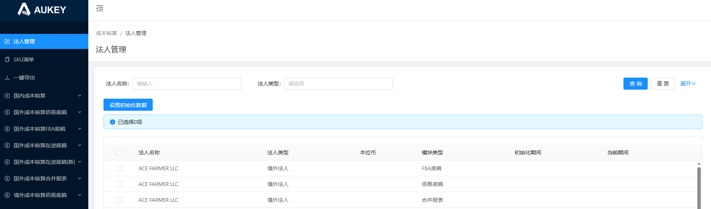

金蝶法人名称 金蝶法人编码
关账
反关账
日志
更新法人名称
需求说明：新增头程法人管理数据及金蝶法人对应关系，引入关账反关账逻辑；
1.列表：新增【金蝶法人名称、金蝶法人编码、状态】如原型所示；
2.定时任务：同步数据时，2.1根据佰易法人名称在【财务对接平台/EAS基础资料/组织单元】匹财务组织为是且未封存的名称，若匹到唯一则将【名称+编码】新增至当前页面同一佰易法人名称所有数据对应金蝶
法人名称编码字段中；否则不赋值；
2.2确认后，在原逻辑基础上根据法人类型再新增生成数据，分别为：法人类型=境外法人，生成2条模块类型分别为‘头程底稿（财报）、头程底稿（管报）’的数据
法人类型=国外法人，生成2条模块类型分别为‘头程底稿（财报）、头程底稿（管报）’的数据
所有生成的数据状态均赋值‘未关账’；若同步后的数据法人类型为空，不影响新增2条模块类型分别为财报和管报的数据；
3.按钮：
3.1【设置初始化数据】：
弹窗新增【金蝶法人名称、金蝶法人编码】：位于初始化期间下方，下拉单选必录，先根据所选佰易法人名称在【财务对接平台/EAS基础资料/组织单元】匹名称，若匹到则默认展示名称；否则无默认值，选项为组织单元所有财务组织为是且未封存名称列；选择后金蝶法人编码选项带出该所选未封存名称对应的所有编码项，如果仅有一个编码则自动带出；确认后将所维护【名称+编码】新增至当前页面同一佰易法人名称所有数据对应字段中；
调整法人类型后，需同步调整头程底稿（财报、管报）数据的法人类型；
3.2【更新法人名称】：（仅限更新未关账数据）
点击按钮二次确认，确认后3.2.1根据金蝶法人编码在【财务对接平台/AS基础资料/组织单元】关联并同步更新当前页面金蝶法人名称；
3.2.2更新后，再根据【金蝶法人编码+法人类型+模块类型（=头程底稿（财报））+当前期间】更新【国/境外成本核算头程底稿（财报）】所有页面的法人；
3.3【关账】：3.3.1支持勾选单条数据进行关账，二次弹窗确认：请确认是否将所选法人主体关账，注意：关账后无法处理该法人所有费用模块当前期间数据，且不再结转当前期间至递增期间！
3.3.2确认后校验所选去重的【金蝶法人名称】数据，是否存在已关账数据，若存在则关账失败并给出相应提示；否则所选法人对应所有费用模块【状态】均更新为’已关账‘；
3.3.3未维护金蝶法人名称&当前期间的数据，点击关账失败并提示：未初始化数据不允许关账！
3.4【反关账】：3.4.1支持勾选单条数据进行反关账，二次弹窗确认：请确认是否将所选法人主体反关账，注意：反关账后可处理该法人所有费用模块当前期间数据，且支持结转当前期间至递增期间！
3.4.2确认后校验所选去重的【金蝶法人名称】数据，是否存在未关账数据，若存在则关账失败并给出相应提示；
否则打开重置当前期间弹窗：【当前期间】：日期框精确到月必录，默认展示上一自然月；--校验所选当前期间需晚于等于该法人所有列表当前期间；
确认后所选数据列表【状态】更新为’未关账‘，【当前期间】更新为所选期间；
3.4.3反关账后，若所选期间晚于当前期间（不含等于），则在金蝶法人编码+法人类型+模块类型（仅限头程相关）+所选期间对应的头程底稿期初根据原关账期间期末数据生成数据，
逻辑参考【结账】页面2.2步骤B； 如：关账当前期间为5月。反关账所选期间为8月，则根据5月【财报头程勾稽】页面数据生成8月期初数据；
状态
已关账
未关账